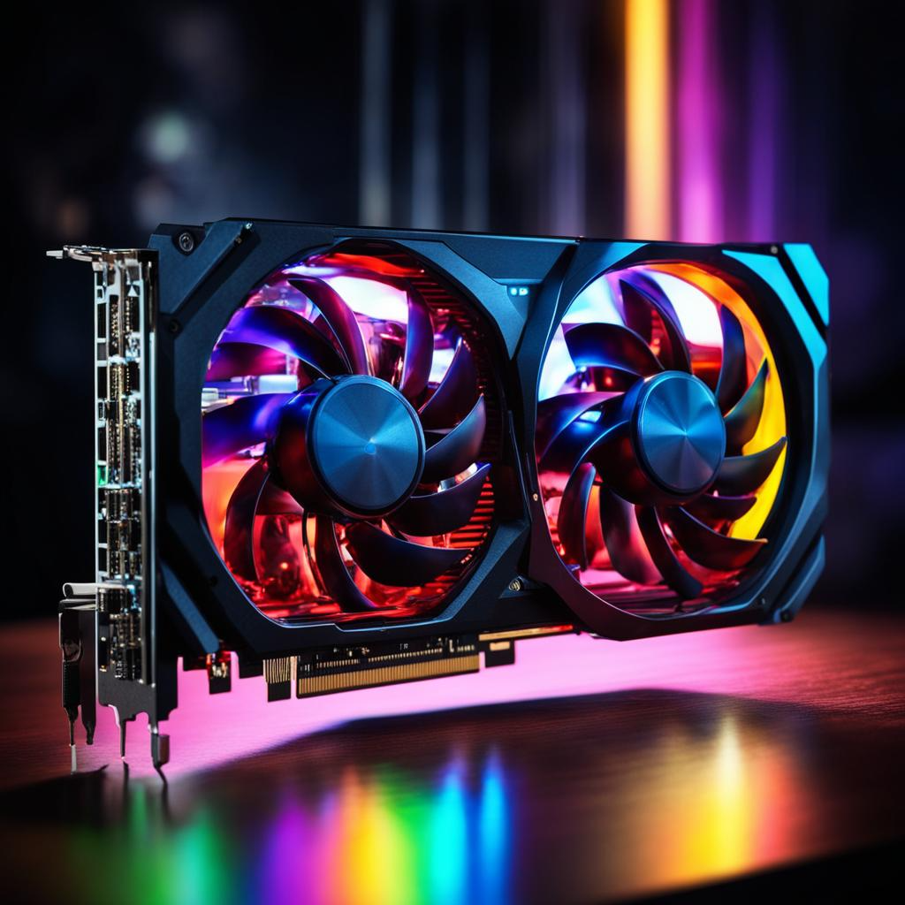
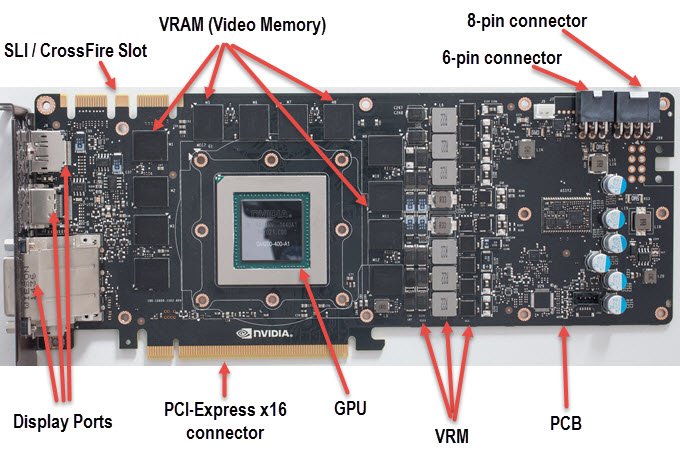
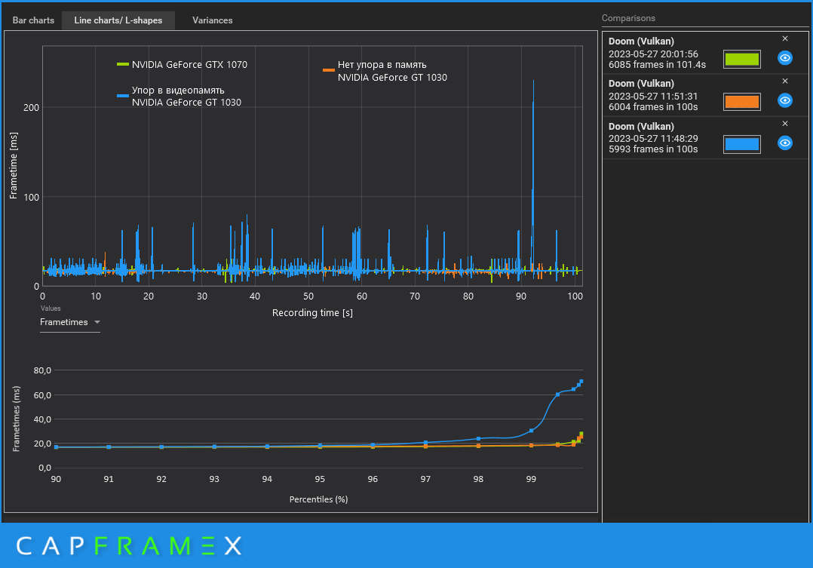
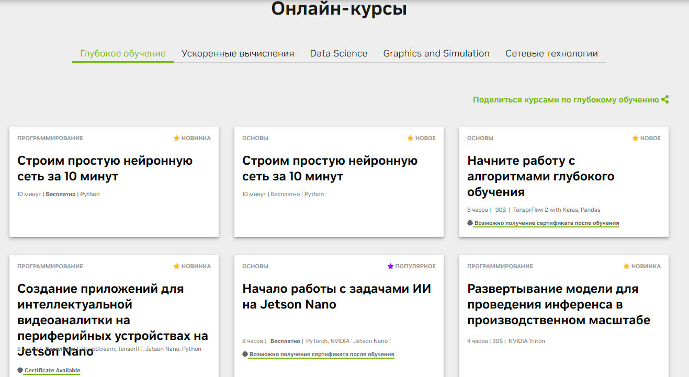

Освоение Технологических Возможностей: видеокарты
Опубликовано
В современном технологическом мире, где вычислительная мощь и графическая производительность становятся все более важными, понимание функций и возможностей современных видеокарт становится неотъемлемым.
В этой статье мы рассмотрим, какие профессии могут выиграть от глубокого изучения этого ключевого компонента компьютерных систем.
Что представляет собой видеокарта?
Прежде чем мы погрузимся в конкретные профессии, давайте рассмотрим основные компоненты видеокарты и её роль в современных вычислительных системах.
Графический процессор (GPU), видеопамять (VRAM), ядра CUDA/Stream Processors, шины данных и контроллеры - эти элементы работают в слаженной системе, обеспечивая эффективную обработку графики и выполнение параллельных вычислений.
Строение видеокарты
Кому полезно знать функции видеокарты?
Графические дизайнеры и специалисты по видеомонтажу могут извлечь максимум из изучения видеокарт, оптимизируя работу с графикой, визуальными эффектами и анимацией.
Они получат преимущество в создании высококачественного контента.
Разработчики приложений и игр найдут ценные знания о поддержке графических API, параллельных вычислениях и использовании инструментов разработки.
Это поможет им создавать более эффективные и производительные приложения.
Исследователи в области машинного обучения могут использовать возможности видеокарт для выполнения интенсивных вычислений, ускоряя процессы обучения и инференса моделей машинного обучения.
Эксперты в области информационных технологий найдут полезные сведения о технологических ограничениях видеокарт, что позволит им принимать обоснованные решения при выборе оборудования и оптимизации систем.
Понимание ограничений по объему видеопамяти станет ключевым для графических дизайнеров, работающих с большими файлами и ресурсоемкими проектами.
Влияние недостатка видеопамяти на производительность
Администраторы систем могут рассмотреть ограничения по энергопотреблению и тепловыделению при выборе и настройке оборудования для серверов и вычислительных кластеров.
Вывод
Изучение современных видеокарт становится обязательным для профессионалов, ориентированных на технологии.
Независимо от того, являетесь ли вы геймером, разработчиком, исследователем или IT-специалистом, знание о функциях и ограничениях видеокарт может стать ключевым фактором для успешной работы и оптимизации задач.
Понимание аппаратного ускорения, параллельных вычислений и графических API позволит увеличить производительность приложений и игр.
Графические дизайнеры и разработчики смогут эффективно управлять ресурсами видеокарты, создавая более ресурсоэффективные проекты.
Знание ограничений видеокарт поможет принимать обоснованные решения при выборе оборудования, снижая издержки и повышая эффективность.
Как получить знания о видеокартах?
С учетом быстрого развития технологий видеокарт, обучение и профессиональное развитие в этой области становятся важными шагами для тех, кто стремится быть в курсе последних тенденций.
Онлайн-курсы, сертификации и семинары предоставляют отличные возможности для глубокого изучения этой темы.
Онлайн-курсы от NVIDIA
Заключение
Изучение видеокарт перестает быть прерогативой только геймеров.
Это становится неотъемлемым компонентом знаний для широкого круга профессионалов, чья работа зависит от эффективного использования графической производительности и параллельных вычислений.
Взгляните на свою профессию – возможно, именно сейчас наступает момент, когда погружение в мир видеокарт станет вашим ключом к новым высотам в карьере.